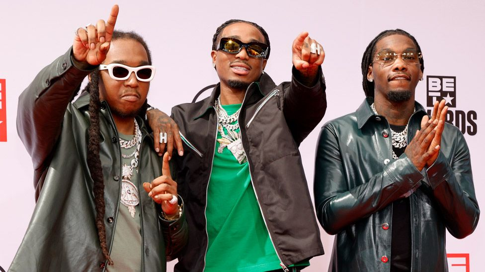

Migos (/ˈmiːɡoʊs/) is an American hip hop group from Lawrenceville, Georgia, founded in 2008. The group was originally composed of Southern rappers Quavo, Takeoff, and Offset. They are managed by Coach K, the former manager of Gucci Mane and Jeezy,and frequently collaborated with producers such as DJ Durel, Murda Beatz, Zaytoven, and Buddah Bless.Recognized for their contribution to trap music in the 2010s, Billboard stated that the group "influenced pop culture and the entire English language by bringing their North Atlanta roots to the mainstream".
Migos released their commercial debut single "Versace" in 2013, taken from their mixtape Y.R.N. (Young Rich Niggas). They released several more singles, including "Fight Night" (2014), "Look at My Dab" (2015), and their four Billboard Hot 100 top 10 entries "Bad and Boujee" (featuring Lil Uzi Vert) (2016), peaking at number 1, "MotorSport" (with Nicki Minaj and Cardi B) (2017), peaking at number 6, "Stir Fry" (2018), peaking at number 8, and "Walk It Talk It" (featuring Drake) (2018), peaking at number 10.
Migos released their debut album Yung Rich Nation in July 2015, through Quality Control Music and 300 Entertainment. In 2016, the group portrayed fictionalized versions of themselves in the first season of the Donald Glover comedy-drama television series Atlanta. Their second album, Culture, was released in January 2017 also through both record labels, and debuted atop the US Billboard 200 chart. The group signed a deal with Motown and Capitol Records in February 2017, and put out the album Culture II in January 2018, giving the group their second number 1 album in the United States.In 2021, the trio released their long-awaited fourth album Culture III, the final installment in their Culture trilogy.
On November 1, 2022, Takeoff was shot and killed in Houston, Texas.

CAREER
2008–2012: Formation and early releases
Migos was formed in 2008, by Quavo (born Quavious Keyate Marshall),Takeoff (born Kirshnik Khari Ball),and Offset (born Kiari Kendrell Cephus),and they originally called themselves the Polo Club.
The name 'Migos' is a take on 'Three Amigos'[18].
The three members are directly related and were raised together; Quavo is Takeoff's uncle, and Offset is Quavo's cousin.
The three of them grew up together in suburban Atlanta, approximately 30 minutes northeast of Downtown in Gwinnett County.
"I ain't going to sit here like, 'My neighborhood was hard, and I had to get out there and grind.
' We made it hard for ourselves. We chose to stay on the streets", Quavo said.
The group released their first full-length project, a mixtape titled Juug Season, on August 25, 2011.
They followed with the mixtape No Label on June 1, 2012. Assisted by Tucker Toenjes and Mitchell Thomas.
2013: Breakthrough and Y.R.N.
In 2013, Migos released their breakout single "Versace".
The single was produced by Zaytoven and peaked at number 99 on the US Billboard Hot 100 chart.
Later that year, Canadian rapper Drake brought the single more recognition when he remixed the song, adding a verse, which he would later perform at the 2013 iHeartRadio Music Festival.
On June 13, Migos released their mixtape Y.R.N. (Young Rich Niggas), which features the lead single "Versace", to critical acclaim.
Brandon Soderberg of Spin gave it 8 out of 10 stars, commenting that it "is a super-cut of Dirty South vibes" and compared the three members to Gucci Mane, Soulja Boy, and Future.
On June 15, 2013, the group performed at rap radio station Hot 107.9's Birthday Bash. In October 2013, the group was featured in XXL's section "Show & Prove".
"Versace" was placed in multiple year-end lists of 2013, including number three on XXL's "The 25 Best Songs of 2013",number four on Complex's "The 50 Best Songs of 2013", number five on SPIN's "50 Best Songs of 2013",number 38 on Pitchfork's "The Top 100 Tracks of 2013"and number 69 on Rolling Stone's "The 100 Best Songs of 2013". Y.R.N. (Young Rich Niggas) was named the 27th-best album of 2013 and sixth-best hip-hop album of 2013 by SPIN.
2014–2015: Mixtapes and Yung Rich Nation
On February 25, 2014, Migos released the sequel to their second mixtape, titled No Label 2.
The tape was downloaded over 100,000 times in the first week of its release and was certified gold on mixtape sharing site DatPiff.No Label 2 was met with generally positive reviews from music critics. Consequence of Sound described it as "the perfect mix of raucous party tunes and triumphant rap anthems for your next BBQ or block party" and Exclaim! commented that it "is packed with potential hits".Vibe also praised the production on the tape, calling it "extensive and impressive".
On March 14, 2014, it was revealed by Migos' mixtape Y.R.N. 2, that the project had turned out to be a full-fledged album.
The trio were aiming to have at least 20 songs on the album.In June 2014, it was revealed that Migos had signed a deal to 300 Entertainment, which is distributed by Atlantic Records.In June 2014, their single "Fight Night" was featured on XXL's "25 Best Songs of 2014 so far" list. It peaked at number 69 on the Billboard Hot 100.Following the release of their mixtape, Rich Nigga Timeline, which was released on November 5, 2014, Rolling Stone voted it the 7th-best rap album of 2014.
On February 5, 2015, Migos released the first single from the album, titled "One Time".
On March 23, 2015, the group released a music video for the single, as a part of a cross-promotion with the YouTube Music Awards.
The single peaked at number 34 on the US Hot R&B/Hip-Hop Songs.
After a slight delay, because of the Georgia Southern University incident (which led to Offset's incarceration), Migos' debut album, Yung Rich Nation (originally titled Y.R.N.: Tha Album), was released on July 31, 2015, featuring guest appearances from Chris Brown and Young Thug. Yung Rich Nation received generally positive reviews from music critics. In its first week, the album sold 15,000 copies and came in at number 3 on the Top Rap Albums Charts.
During this time, it was revealed that the group had already completed their second studio album.
Referring to this album's release, in an interview with DJ Whoo Kid, Takeoff said, "its all about timing".
Migos stated that the track "Fantastic", featuring Lil Wayne, would be included on the album. In addition, they confirmed they would also like to collaborate with rapper Nas.
In September 2015, Migos went independent.
They left 300 Entertainment as they felt that Quality Control Music could manage them alone and this would also increase their revenue stream.
Under 300 Entertainment, they made approximately US$30,000–40,000 per show; however, through Quality Control they made upwards of US$60,000.
On September 17, 2015, Migos released a new mixtape titled Back to the Bando.Although fellow member Offset was still incarcerated, Migos continued to release music. The first song off the mixtape, "Look at My Dab", was released on September 6. It was officially released as a single through iTunes on October 30.
The song gained worldwide attention, due to Migos and other celebrities, like Odell Beckham Jr. and Cam Newton, doing the signature dance move called "dabbing".
On October 22, 2015, Migos and Rich the Kid released Streets on Lock 4.
Migos were originally supposed to release the collaboration mixtape with Young Thug titled MigoThuggin in late 2016 but shelved it.Their follow up mixtape to YRN, Young Rich Niggas 2, was released on January 18.
2016–2022: Culture trilogy and Takeoff's death
On September 7, 2016, Kanye West announced that he had signed Migos to a management deal with his GOOD Music imprint, but in January 2017 the group stated that they are not affiliated with West's label.On October 28, 2016, Migos released the first single of their new album Culture. The single was titled "Bad and Boujee".
The song was produced by Metro Boomin and features vocals from fellow American rapper Lil Uzi Vert.
The music video for the single was released on October 31. The single went on to top the Billboard Hot 100, becoming Migos' first number one single in the US.
Their second album, Culture, was released on January 27, 2017.
In April, Migos were featured on Katy Perry's song "Bon Appétit" from her fifth studio album, Witness.
On May 30, Migos (branded by Quality Control) released "Too Hotty" which is featured on the compilation album, Quality Control: Control the Streets Vol. 1, released on December 19, 2017. The single was officially released on streaming services on August 24, 2017. The music video was released on August 25. On June 16, the Migos (alongside Lil Yachty) were featured on the Steve Aoki song "Night Call". On October 27, Migos officially released "MotorSport", the lead single off their third studio album Culture II, along with Cardi B and Nicki Minaj.
The second single, "Stir Fry", was released on the official Migos YouTube channel, on December 20, 2017.Produced by Pharrell Williams, the song was later used for the 2018 NBA All-Star Weekend.
A promotional single, titled "Supastars", was released on January 22, 2018.
It was produced by Honorable C.N.O.T.E., Buddah Bless, and Quavo; it was co-produced by DJ Durel.
On January 26, 2018, Culture II was released. The album contains twenty-four tracks, featuring production from Metro Boomin, Dun Deal, Murda Beatz, Travis Scott, Zaytoven and others. In October 2018, Quavo stated that Culture III would be released in early 2019. The album was then delayed and rescheduled for release in early 2020. However, the album was pushed back again, due to the COVID-19 pandemic. Quavo spoke to Billboard in March 2020, and announced the group's decision to hold off on the release of Culture III, explaining it was largely due to their inability to properly roll out the album once social distancing rules went into effect in most states in the US. While on Lil Wayne's Young Money Radio show on Apple Music, on May 22, 2020, Migos announced they would change the title from Culture III to another title. However, this was reverted on May 17, 2021, when the group announced via Instagram that Culture III would be released June 11 of the same year under its original name.
In 2022, the group was rumored to have broken up after Quavo’s ex-girlfriend Saweetie had reportedly slept with Offset. Quavo alluded to the rift in the song "Messy" and in an interview where he insinuated Offset’s lack of loyalty.In October 2022, Quavo and Takeoff subsequently released an album without Offset titled Only Built for Infinity Links. On November 1, 2022, Takeoff was shot and killed while with Quavo and others at a Houston bowling alley.
DISCOVERY
- Yung Rich Nation (2015)
- Culture (2017)
- Culture II (2018)
- Culture III (2021)